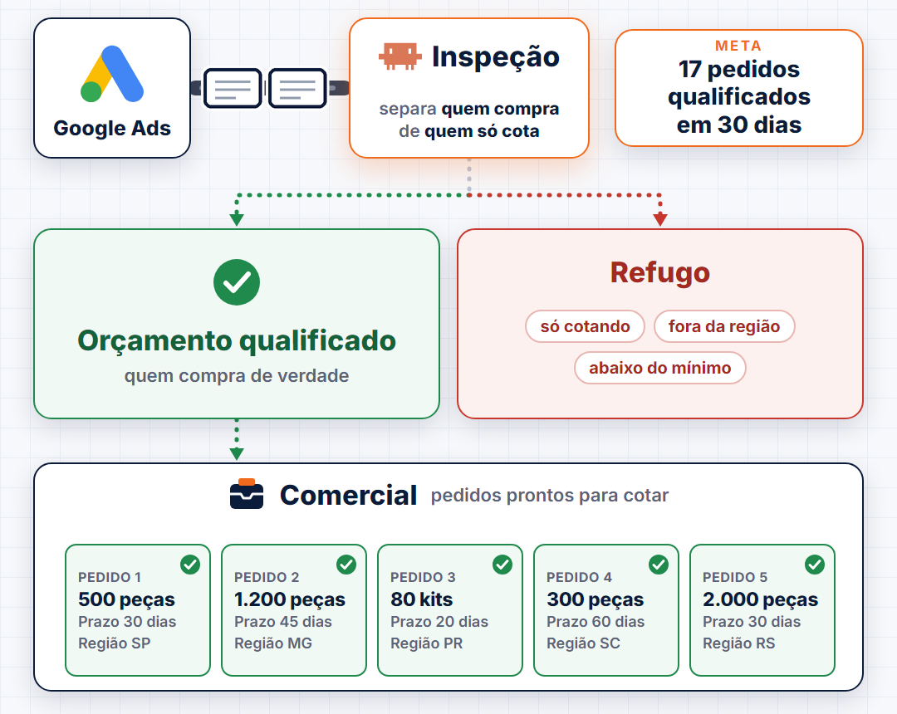
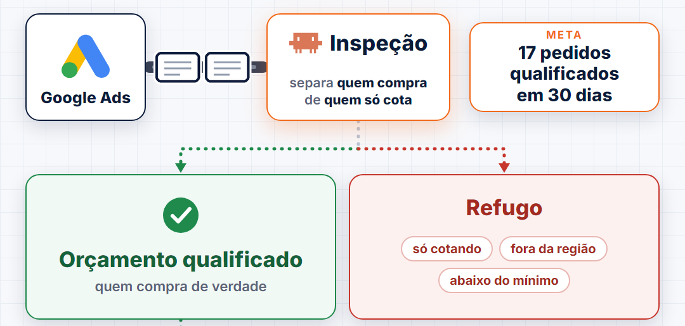
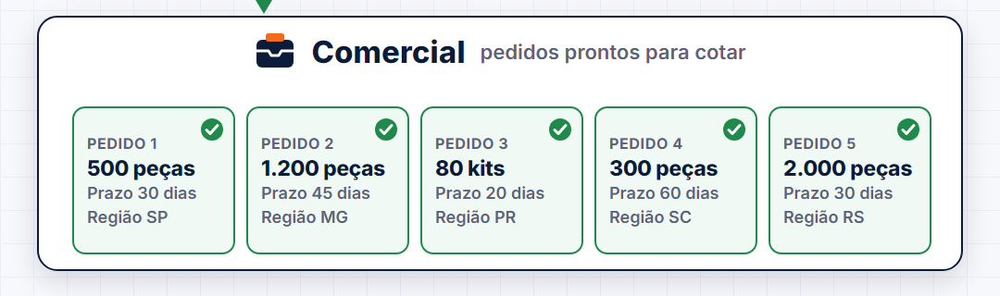

O caminho do pedido de orçamento, em uma imagem

Como usar em 3 passos
Leia as 6 etapas
Em 10 minutos você entende como inspecionar o pedido de orçamento, do recebimento à entrada do comercial.
Faça a primeira inspeção
Pegue os últimos 30 pedidos de orçamento e rode o comando da etapa 3. É o número que mostra o refugo de verdade.
Preencha as duas calculadoras
A das etapas 4 e 5 mostram o que o refugo custa e quantos pedidos você precisa receber para chegar a 17 qualificados em 30 dias.
Todo pedido de orçamento é tratado como se fosse pedido de compra
Na linha de produção, ninguém monta peça sem inspeção: o que sai fora de especificação vira refugo ou retrabalho, e tem custo. No pedido de orçamento acontece o contrário. Chega pedido de todo tipo, o engenheiro de vendas gasta horas montando cotação, e só depois se descobre que o cliente só queria preço, fica fora da região ou pede abaixo do pedido mínimo.
Neste material, pedido de orçamento qualificado é o que passa em uma inspeção simples: tem quantidade acima do mínimo, prazo realista, região atendida, especificação clara e alguém que decide. O resto é refugo: pedido que consome horas do time e não vira venda.
Em outras palavras: no mercado se chama "lead" o contato que chega pelo anúncio. Aqui vamos falar na linguagem da fábrica: pedido de orçamento, cotação e refugo.
Seis etapas, do recebimento à parada do refugo na entrada
Separe os últimos 30 pedidos de orçamento
Abra o e-mail, o WhatsApp ou a planilha de cotações e pegue os 30 pedidos mais recentes. Para cada um, anote:
| Coluna | O que anotar |
|---|---|
| Número | 1 a 30 (sem o nome do cliente: use só o número) |
| Data | Quando o pedido chegou |
| Quantidade pedida | Peças, kits, lotes ou metros |
| Prazo pedido | Em dias |
| Região | Estado ou cidade da entrega |
| Quem pediu | Cargo (diretor, comprador, engenheiro, outro) |
| Horas gastas na cotação | Uma estimativa do time |
| Fechou? | Sim, não ou ainda em aberto |
Para o comando da etapa 3, tire nomes, telefones e e-mails: a inspeção só precisa dos dados acima.
Escreva a ficha técnica do pedido qualificado
| Item inspecionado | Critério (preencha com os da sua indústria) | Se não atender |
|---|---|---|
| Quantidade | Igual ou acima do pedido mínimo: [QUANTIDADE OU VALOR MÍNIMO] | Refugo: abaixo do mínimo |
| Prazo | Compatível com a sua capacidade: [PRAZO MÍNIMO EM DIAS] | Refugo: prazo impossível |
| Região | Dentro da área que você atende: [ESTADOS OU REGIÕES] | Refugo: fora da região |
| Especificação | Desenho, norma, material ou descrição clara do que precisa | Retrabalho: pedir a especificação antes de cotar |
| Quem decide | Quem pediu decide ou leva a decisão a quem decide | Atenção: só pesquisando preço |
Comece com 5 critérios, no máximo. Cada critério precisa ser algo que o cliente responde em uma linha. Revise com o seu time comercial: eles sabem melhor do que ninguém o que vira venda.
Passe os 30 pedidos pela inspeção com o Claude

O Claude é um assistente de inteligência artificial da Anthropic. Ele aplica a ficha de inspeção em cada pedido, classifica como aprovado ou refugo, diz o motivo e soma o que o refugo custou em horas.
Você é o inspetor de qualidade dos pedidos de orçamento da minha indústria. Vou colar os últimos 30 pedidos de orçamento e a minha ficha de inspeção. Para cada pedido, faça a inspeção e responda em uma tabela com as colunas: número, resultado (APROVADO ou REFUGO), motivo em poucas palavras e horas gastas na cotação. Depois da tabela, entregue: 1. Quantos pedidos foram aprovados e quantos viraram refugo (em número e em porcentagem). 2. Os 3 motivos de refugo que mais aparecem, do mais frequente para o menos frequente. 3. O total de horas gastas com pedidos que viraram refugo. 4. Entre os aprovados, quantos fecharam e quantos não (se a coluna "fechou" existir). 5. Uma sugestão de frase para o anúncio e para o formulário que já avise o cliente do pedido mínimo e da região atendida. Regras: use só o que está na tabela. Se faltar informação em algum pedido, escreva "faltou informação" no motivo e não adivinhe. Não invente número. Não decida pelo comercial: no fim, liste os pedidos que ficaram "na dúvida" para uma pessoa revisar. Ficha de inspeção: [COLE AQUI A FICHA DA ETAPA 2] Pedidos (sem nomes, telefones nem e-mails): [COLE AQUI OS 30 PEDIDOS DA ETAPA 1]
Confira antes de usar: abra 5 pedidos que o Claude classificou e confirme com o seu time. Se o Claude barrar pedido que o comercial considera bom, ajuste o critério da ficha e rode de novo.
Calcule quanto o refugo custa por mês
Use os números da etapa 3. O valor da hora é opcional: se não preencher, a calculadora mostra só as horas.
| Número | Preencha |
|---|---|
| Pedidos de orçamento que chegam por mês | |
| Desses, quantos por cento viram refugo | |
| Horas gastas para cotar cada pedido | |
| Custo de uma hora do time de vendas (R$, opcional) |
A conta usa 8 horas por dia de trabalho. Ela mostra como o custo funciona e não promete resultado.
Faça a conta da meta: 17 pedidos qualificados em 30 dias
Com a taxa de aprovação da etapa 3, a calculadora mostra quantos pedidos de orçamento precisam chegar para você ter a quantidade de pedidos qualificados que quer. A meta de 17 já vem preenchida: troque pela sua.
| Número | Preencha |
|---|---|
| Meta de pedidos qualificados em 30 dias | |
| Desses pedidos que chegam, quantos por cento passam na inspeção | |
| Dos qualificados, quantos por cento fecham (opcional) | |
| Valor médio de um pedido fechado (R$, opcional) |
A meta é uma conta de planejamento, não uma promessa. Ela só diz quantos pedidos precisam chegar para a taxa de aprovação que você informou.
Faça o anúncio e o formulário inspecionarem o pedido antes de chegar ao comercial
 Anúncio já filtra
Anúncio já filtra Formulário inspeciona
Formulário inspecionaAgora você usa o que o refugo ensinou. Os 3 motivos mais frequentes da etapa 3 viram três ajustes:
- No anúncio do Google: o pedido mínimo e a região aparecem no texto, e as palavras de quem só cota (grátis, usado, conserto, uso doméstico) são bloqueadas.
- No formulário: as perguntas da ficha de inspeção filtram o pedido antes de ele chegar ao comercial.
- No comercial: só chega a ficha do pedido qualificado, com quantidade, prazo e região.

Com o resultado da inspeção (os 3 motivos de refugo mais frequentes), monte o que muda no meu anúncio de pesquisa do Google. Entregue: 1. Uma lista de palavras a bloquear, com o motivo de cada uma (por exemplo: grátis, usado, conserto, uso doméstico, e termos que atraem pedido abaixo do mínimo). 2. 3 títulos (até 30 caracteres cada) e 2 descrições (até 90 caracteres cada) que já avisem o pedido mínimo e a região atendida. 3. Uma frase curta para o topo da página do formulário que explique para quem o orçamento é indicado. Regras: nenhuma promessa de resultado, nenhum número ou cliente inventado. Linguagem de quem fala com quem compra em indústria, em português simples. O pedido mínimo é [PEDIDO MÍNIMO] e eu atendo [REGIÕES]. Os 3 motivos de refugo: [COLE AQUI O RESULTADO DA ETAPA 3]
O Claude Code é um programa que escreve e organiza código a partir do que você pede em português. Na primeira vez, instale seguindo o guia oficial no site da Anthropic. Se preferir, peça a quem cuida do seu site ou de tecnologia para rodar o comando por você.
Crie uma página web simples, em português do Brasil, com um formulário de pedido de orçamento que faz a inspeção do pedido. Primeiro, peça nome, e-mail de trabalho, WhatsApp e empresa. Inclua uma caixa de autorização, não marcada, e um texto curto dizendo para que os dados serão usados. Depois, faça estas perguntas de escolha, uma por tela: 1. Qual a quantidade que você precisa? [FAIXAS, COM A ABAIXO DO MÍNIMO MARCADA COMO REFUGO] 2. Para quando você precisa? [FAIXAS DE PRAZO, COM O PRAZO IMPOSSÍVEL MARCADO COMO REFUGO] 3. Em que estado será a entrega? [ESTADOS ATENDIDOS, E "OUTRO" MARCADO COMO REFUGO] 4. Você já tem o desenho ou a especificação? [SIM, TENHO / PRECISO DE AJUDA / AINDA NÃO] 5. Qual o seu cargo e quem decide a compra? [OPÇÕES] Resultado: se o pedido passar nos critérios de quantidade, prazo e região, mostre "Pedido recebido, o comercial retorna em breve" e envie ao comercial uma ficha com quantidade, prazo, região, cargo e especificação, no e-mail [E-MAIL DO COMERCIAL]. Se não passar, mostre uma mensagem educada explicando o pedido mínimo e a região atendida, sem enviar ao comercial. Guarde todas as respostas e o resultado (aprovado ou refugo) em uma planilha. Regras: nenhuma promessa de resultado, nenhum número, cliente ou depoimento inventado. Visual limpo e profissional, que carregue rápido no celular. Não invente informação. Antes de terminar, me explique em linguagem simples como testar a página e como publicar.
Responda o formulário você mesmo de três jeitos (pedido aprovado, abaixo do mínimo e fora da região) antes de ligar o anúncio. Nas primeiras semanas, leia todos os pedidos que ficaram de fora, para ter certeza de que o formulário não barra quem compraria.
Acompanhe a linha toda semana, com 3 números
| Número | Como calcular | O que mostra |
|---|---|---|
| Pedidos recebidos | Quantos pedidos de orçamento chegaram na semana | O volume que o anúncio traz |
| Taxa de aprovação | Pedidos aprovados ÷ pedidos recebidos | Se o filtro está funcionando |
| Pedidos qualificados no mês | Soma dos aprovados desde o dia 1, comparada com a meta (17, por exemplo) | Se a linha vai bater a meta |
Escolha um dia e um horário fixos e anote os números numa planilha. Dez minutos por semana bastam.
O que a inteligência artificial não decide sozinha
| A inteligência artificial pode | Uma pessoa decide |
|---|---|
| Aplicar a ficha de inspeção e classificar os pedidos | Os critérios da ficha e os pedidos que ficaram na dúvida |
| Escrever o texto do anúncio e as palavras bloqueadas | O que o anúncio diz: tudo precisa ser verdade e sem promessa de resultado |
| Criar o formulário e enviar a ficha ao comercial | Quem foi barrado nas primeiras semanas e o que fazer com esses casos |
| Calcular horas, custo e meta | Se a taxa de aprovação é boa o bastante para investir mais |
A inspeção separa o pedido, não fecha a venda. Quem monta a cotação, negocia e fecha continua sendo o seu comercial.
Poucos dados enganam. Com poucos pedidos, a taxa de aprovação pode mudar muito de uma semana para outra. Use os 30 pedidos como ponto de partida e continue medindo.
Dados pessoais: peça só o necessário, escreva na página para que os dados serão usados e tenha uma caixa de autorização, não marcada. Revise com quem cuida de privacidade na sua empresa.
Funciona sem comprar nada específico: os pedidos podem estar no e-mail, no WhatsApp ou numa planilha, e a planilha pode ser a do Google ou do Excel.
Como fica a inspeção e a conta
Valores de exemplo. Indústria fictícia de componentes sob medida.
| Pedido | Quantidade | Prazo | Região | Resultado |
|---|---|---|---|---|
| 1 | 500 peças | 30 dias | SP | APROVADO |
| 2 | 20 peças | 30 dias | SP | REFUGO abaixo do mínimo |
| 3 | 1.200 peças | 45 dias | MG | APROVADO |
| 4 | 300 peças | 10 dias | AM | REFUGO fora da região |
| Conta do exemplo | Resultado |
|---|---|
| Pedidos que chegam por mês | 30 |
| Viram refugo | 18 (60%) |
| Horas gastas por cotação | 3 horas |
| Horas perdidas por mês | 54 horas (quase 7 dias de trabalho) |
| Meta de pedidos qualificados em 30 dias | 17 |
| Aprovação na inspeção | 40% |
| Pedidos que precisam chegar | 43 |
Leitura do exemplo: com 60% de refugo, o time perde quase 7 dias de trabalho por mês cotando para quem não compra. Para ter 17 pedidos qualificados com 40% de aprovação, precisam chegar 43 pedidos, e é por isso que parar o refugo na entrada (etapa 6) muda a conta.
Os números acima são de exemplo e não representam um caso real.

Há mais de 5 anos trabalho com marketing digital. Sou formado em Marketing e me especializei em tráfego pago, com foco em performance: já investi mais de R$ 5 milhões em mídia paga.
Hoje, à frente da Zayvon, ajudo empresas B2B a estruturar a venda pela internet, do anúncio ao fechamento, por meio do Aquisição Previsível.
Na prática, conecto o anúncio, o filtro que separa pedido bom de pedido ruim, a automação, a inteligência artificial e o controle de orçamentos do time comercial. O anúncio atrai quem realmente pode comprar, e o tempo do seu time fica reservado para essa pessoa.